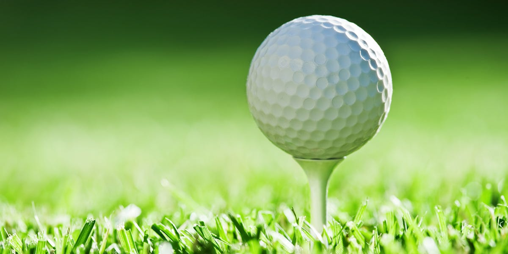

El diseño de las pelotas de golf se enfoca principalmente en aumentar la distancia que recorrerá en el aire, por ende, las fuerzas aerodinámicas juegan un rol fundamental en esto.
La respuesta principal de porque las pelotas de golf tienen hoyuelos, la da el número de Reynolds crítico, el cual es el valor del número de Reynolds (Re) que permite determinar si el cuerpo está sometido a un flujo laminar o turbulento, en el cual se encontró que si este valor estaba sobre los 2300 es flujo turbulento y si está bajo este valor es flujo laminar.
Una pelota de golf tiene un Re igual a 7000, por lo tanto, está en un flujo turbulento. Esto es gracias a los hoyuelos, lo que implica que el flujo llega a ser turbulento a una velocidad más baja que en una esfera lisa. Esto hace al flujo seguir unido a la pelota de golf por más tiempo, lo que implica una reducción de la fricción y por ende que recorra una mayor distancia.
En las pelotas que son de superficie lisa el flujo se separa de manera rápida de estas, mientras que las pelotas con imperfecciones en su superficie como los hoyuelos, la separación del flujo se retrasa al tener una capa límite turbulenta. Para ver los dos tipos de flujos que se forman solo haz click en el botón “cambiar a pelota de golf”.
Cuando la capa límite está en un estado turbulento como en el caso de la pelota de golf, tiene una mayor cantidad de movimiento cerca de la pared que la laminar, producto del transporte y la mezcla turbulenta, que a su vez hacen que se separe relativamente tarde en comparación a una capa límite laminar, que sería el caso de la pelota lisa. Esto resulta en una zona de separación o estela más pequeña detrás de la pelota, y como consecuencia un menor arrastre, tal como se ve en la animación.